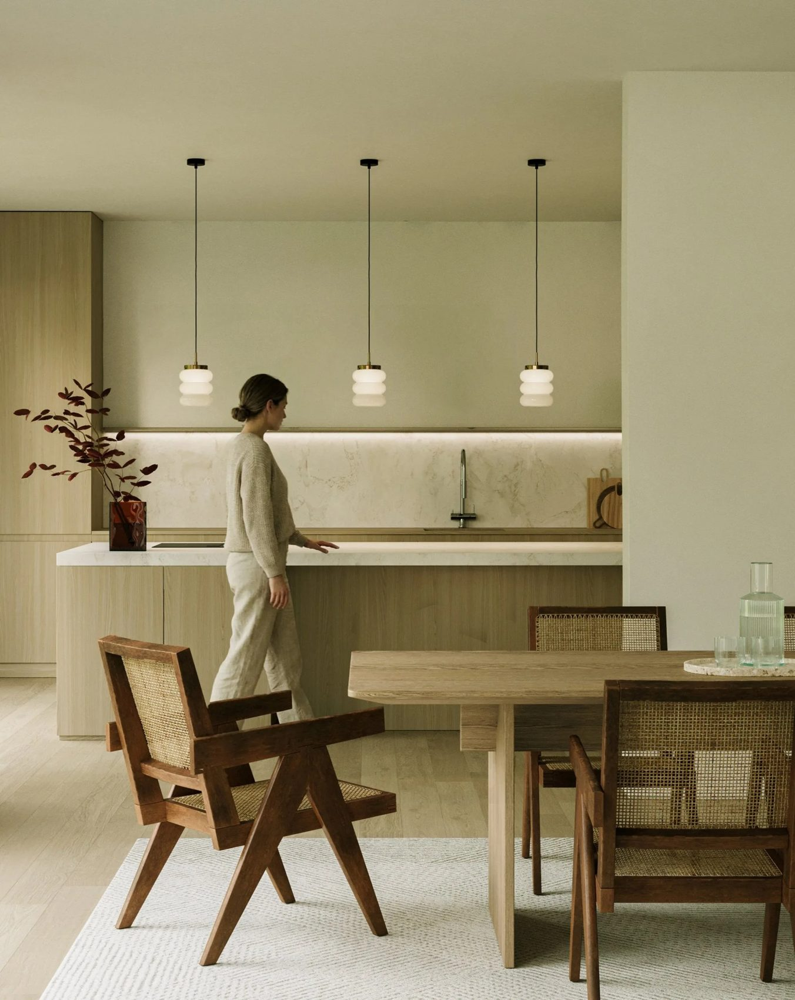
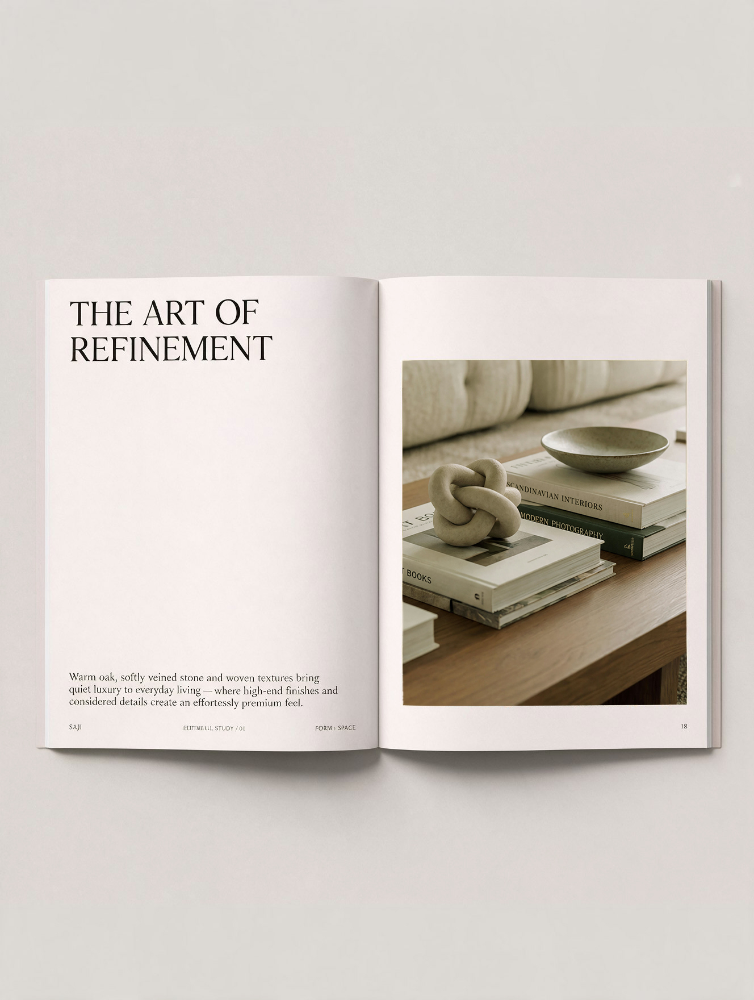
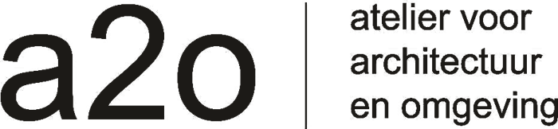
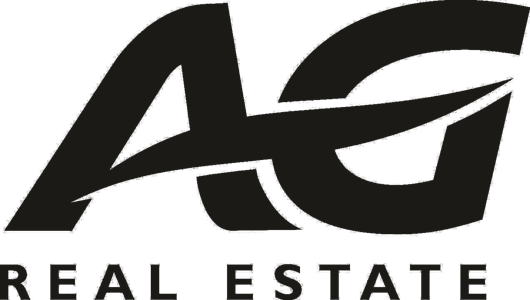
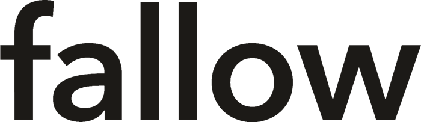
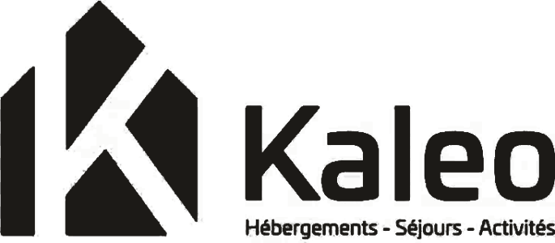
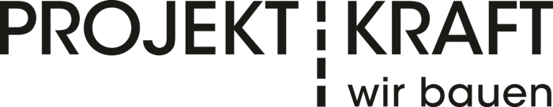
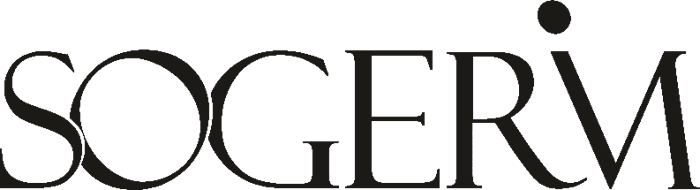

Show it
with flair
Renders, films and campaigns for architects and developers. We show your project the way you designed it, so it is judged on what it really is.
about us
We are a design-focused communication agency specialized in architectural visualization.
We make images that speak for your project through a personal approach and attention to the smallest detail.
services
From the competition to the sales launch,
we make the renders, films and pictures your project needs,
and bring them into brochures, websites and social media posts.

Architectural visualization
Renders of interiors and exteriors, from close-up details to aerial views, and photographic insertions that put your project in the real site.
Film and photography
Animated films that take viewers through projects that aren't built yet, drone sessions that capture the site and its surroundings, and on-site photography of completed buildings.

Campaign
Brochures, websites, signage and social media posts for projects going to market, made from the same renders, films and pictures.
our clients






get in touch
Tell us about your project.
A few lines are enough to book a slot.
We can also step in when your usual studio is unavailable.
Find us on Rue d'Alost in Brussels, at hello@flairstudio.be,
or on WhatsApp at +32 492 45 81 14.